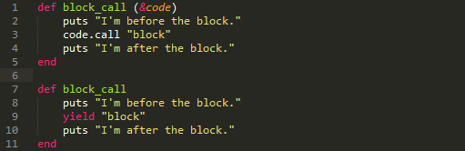
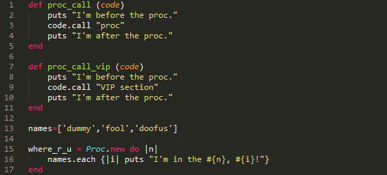
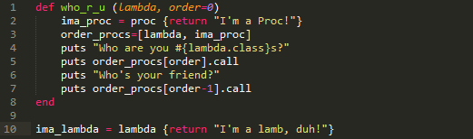

Proc Party
July 29.2014
Blocks, Procs and lambdas are instrumental function syntax in Ruby. After doing some due dilligence, I find it proper to extend to you my basic understanding of these guys. The differences between these closures are rather subtle and I sometimes wish there was only one type. But there are at least three. All three belong to the Procclass, as in procedure. This is very important.
Blocks
Blocks are syntax literals for Proc objects. As such, you can create a block with curlies {}(single line) or with do...end. The code example below illustrates two ways to call the block from a method, and feed it an argument.

block_call {|n| puts "I'm in the #{n}."}
=> I'm before the block.
=> I'm in the block.
=> I'm after the block.
Blocks are easy to code on the fly, but there's another way to create Procs that allows us to save our snippets to objects.
Procs
Although blocks actually are Procs, Procs behave a little differently when explicitly created with Proc.new.

proc_call(where_r_u)
puts
proc_call_vip(where_r_u)
=> I'm before the proc.
=> I'm in the proc, dummy!
=> I'm in the proc, fool!
=> I'm in the proc, doofus!
=> I'm after the proc.
=>
=> I'm before the proc.
=> I'm in the VIP section, dummy!
=> I'm in the VIP section, fool!
=> I'm in the VIP section, doofus!
=> I'm after the proc.
Our where_r_u Proc is a little rude, but he's DRY because we only have to define him once and can use him forever.
Lambdas
Finally, creating a Proc with the keyword lambda makes for even a slightly different Proc. Lambdas have two key differences from the Procs I described above. The first is that a lambda actually cares about the number of arguments passed to it. ¡Mira!
proq = proc {|x,y| "#{x} y #{y}"}
lamb = lambda {|x,y| "#{x} y #{y}"}
puts proq.call('uno','dos')
=> uno y dos
puts proq.call('uno')
=> uno y
puts lamb.call('uno','dos')
=> uno y dos
puts lamb.call('uno')
=> 'block in (main)': wrong number of arguments (1 for 2) (ArgumentError)
On second thought, using Spanish with these particular variable letters may have added unfair befuddlement to this example, but I hope you get it. lambdawill throw a fuss if you neglect an argument, and Proc.new(equivalent to proc) will throw your shit into a bag and push it down the stairs. Because it don't care.
The other difference is in the way lambdas and Procs treat return. lambdareturns only from itself, while procreturns from itself and from the method from whence it came. Looksee!

puts who_r_u ima_lambda
puts
puts who_r_u ima_lambda, 1
=> Who are you Procs?
=> I'm a lamb, duh!
=> Who's your friend?
=> I'm a Proc!
=>
=> Who are you Procs?
=> I'm a Proc!
When the lambda is executed first within #who_r_u, the rest of the method's code is executed. However, when the Proc is executed first, its returnskips the remainder of the method's code. Also worth noting in this example, Ruby does not allow arguments containing return, so I had to define ima_procwithin our method. However, lambdas can magically get away with it, so ima_lambdais defined outside the method and passed in as an argument.
And that's all I have for you.